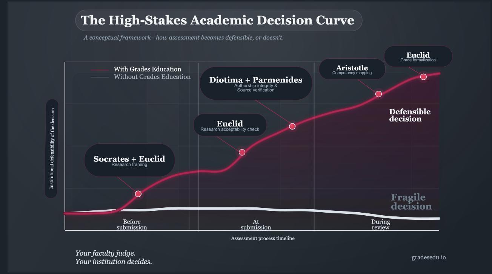

Your faculty judge. Your institution decides.
The gap between the two is where assessment becomes fragile
— across supervisors, across cohorts, across time.
Grades Education is the infrastructure that
closes that gap.

Before the work exists — Supervision
Institutional standards should shape student thinking from the beginning, not be applied as a filter at the end.
Socrates structures the intellectual framing of every dissertation and capstone against your program's own expectations. It does not assist students — it interrogates them. It identifies three cognitive profiles and orients its questioning accordingly. Every student works through the same institutional framework before writing a single page — regardless of who their supervisor is.
When the work arrives — Integrity
Before faculty invest judgment in a submission, the institution needs to know that submission is a reliable object of evaluation.
Diotima examines the actual relationship
between the student and the work — where genuine human reasoning is present, and where it is not. No
tool currently on the market does this reliably.
Parmenides verifies
that cited sources exist and hold. Hallucinated references and citation inconsistencies are flagged
before evaluation begins — not discovered mid-jury.
When the grade is assigned — Formalization
Euclid and Aristotle structure the faculty member's judgment into a documented institutional record. Criteria applied, evidence cited, reasoning preserved — in a form the institution owns, can retrieve, and can rely upon long after the jury has dissolved.
This is not automated grading. It is the difference between a decision that lives in a faculty member's memory and one that belongs to the institution.
This is the unglamorous part of assessment. The part no one competes to build. The part your institution cannot do without.
Start the conversation
We work with institutions to configure this infrastructure around their own standards — their programs, their criteria, their assessment sequences.
Contact us